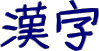

Here are some RSS feeds that show a random kanji, its reading and definition, and example words. The RSS feeds are updated once a day. RSS is a kind of news feed. You'll want a news reader to make proper use of these.
The 1,006 kanji covered in elementary school in Japan are called the kyōiku kanji. The JLPT N1 goes all the way through the junior high school kanji. The list of all of the kanji studied in elementary and junior high school is called the jōyō kanji. These kanji are considered to be the adult literacy baseline. The JLPT lists are dependent on previous levels — for example, if you're studying for N4, you might also want to review the N5 kanji, some of which will also appear on the test.
These feeds are updated daily.

This page is generated using kanjioftheday, written by Douglas Perkins. Examples are from a word frequency list by Alexandre Girardi. EDICT and KANJIDIC data was created by Jim Breen.